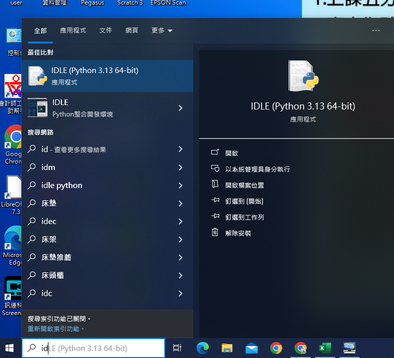
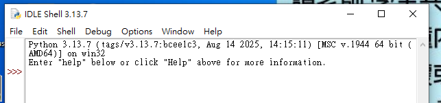
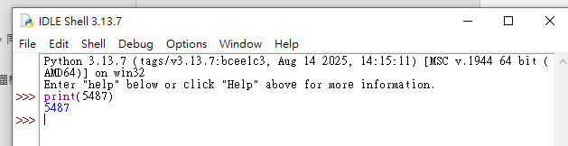
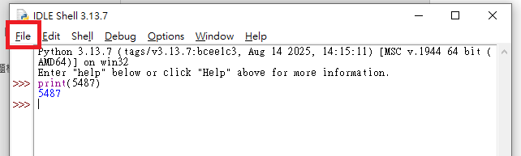
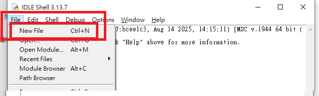
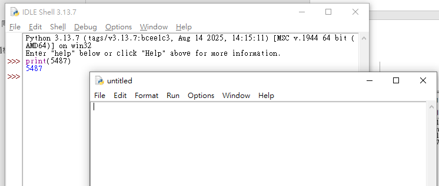
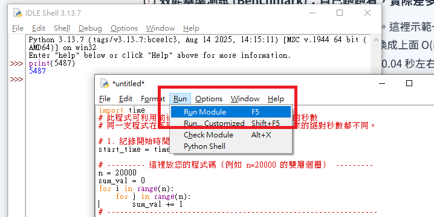
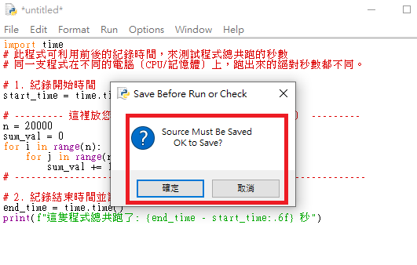
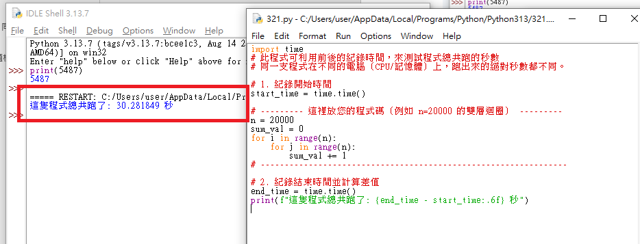

IDLE 操作入門
這學期的程式範例，統一用 IDLE（Python 內建的編輯器）來寫、來執行——這不只是習慣問題，跟 APCS 正式檢測的考場環境也直接相關。這是一個很小的單元，帶你快速認識 IDE／IDLE 是什麼、IDLE 的兩個視窗、怎麼新增檔案、怎麼執行程式。
🎯 學習目標
- 知道 IDE 是什麼、IDLE 是什麼，兩者之間的關係
- 知道為什麼 APCS 這門課要統一用 IDLE 練習
- 分清楚「Shell 視窗」跟「編輯器視窗」的差別
- 會新增一個 .py 檔案、輸入程式碼並存檔
- 會用 Run → Run Module（或按 F5）執行程式，並在 Shell 看到結果
01什麼是 IDE？什麼是 IDLE？
IDE（Integrated Development Environment，整合開發環境）是一種把「編輯程式碼、執行程式、除錯」整合在同一個軟體裡的工具，讓你不用一直切換不同軟體，就能完成寫程式的整個流程。常見的 IDE 有 PyCharm、VS Code、IDLE 等等，種類很多、功能也各有差異。
IDLE（Integrated Development and Learning Environment）則是安裝 Python 的時候會自動一起裝好的編輯器，是 Python 官方內建、專門給 Python 用的 IDE。它的功能比 PyCharm、VS Code 陽春很多，但也因為這樣——不用額外下載、不用註冊帳號、不用連上網路、幾乎每一台裝了 Python 的電腦都找得到它，所以特別穩定、特別適合拿來練習跟考試。
🧰IDE（整合開發環境）
一整套幫你寫程式的工具，種類很多（PyCharm、VS Code……），功能通常比較齊全，但大多需要另外安裝，有些也需要連網下載外掛。
🐍IDLE（Python 內建的 IDE）
裝好 Python 就自動有了，不用另外裝、不用連網、幾乎到哪台電腦都找得到——這學期上課、寫作業、練習範例程式，統一用它。
02為什麼 APCS 這門課要統一用 IDLE？
這不只是老師的個人偏好，而是跟正式檢測的考場環境直接相關：
檢測現場提供的電腦只安裝了基本的作業系統與 Python 內建的 IDLE，不能開瀏覽器、不能用任何線上編譯器（例如 Programiz、repl.it 之類的網站）、也不能安裝其他軟體。也就是說，你在家裡習慣用的「線上執行」網站，到了正式考場完全用不到——考場能用的，就只有內建的 IDE（IDLE）。
為了讓你提早熟悉「正式上場」會用的環境，這學期起，我們所有課堂範例跟練習都統一用 IDLE 來寫、來執行——這樣真正進考場的時候，操作方式你早就已經很熟了，不會因為介面不熟悉而手忙腳亂、浪費寶貴的檢測時間。因為這個原因，之後的單元頁面也不會再放「線上編譯」的連結按鈕，全部改成用 IDLE 操作。
03怎麼打開 IDLE？
在 Windows 上，從開始選單找到 IDLE (Python 3.x) 點開即可（用開始選單搜尋「IDLE」三個字最快）。第一次打開時會看到一個標題寫著 Python 3.x.x Shell 的視窗，這就是 IDLE 的主畫面。

04Shell 視窗：先玩玩看
剛打開的這個視窗叫 Interactive Shell（互動模式），看到 >>> 這個提示符號，就代表它在等你輸入一行程式碼。輸入完按 Enter，馬上就會看到結果——很適合用來快速測試一小段程式碼。
>>> print("Hello, IDLE!")
Hello, IDLE!
>>> 3 + 5
8
>>> 就代表可以開始輸入了。
print(5487) 按 Enter 後，馬上顯示結果 5487——輸入什麼、就馬上看到結果，這就是互動模式的特色。Shell 裡打的東西不會存檔，關掉視窗就沒了。真正要寫作業、寫範例程式的時候，要用下一段介紹的「編輯器視窗」。
05新增檔案並執行程式
這是接下來每一堂課都會用到的流程：
| 步驟 | 操作 |
|---|---|
| 1 | 在 Shell 視窗選單列點 File → New File（快捷鍵 Ctrl+N），會開啟一個空白的編輯器視窗 |
| 2 | 在編輯器裡輸入（或貼上）這一課要練習的程式碼 |
| 3 | 按 Ctrl+S 存檔，檔名用英文與數字命名，例如 unit02.py |
| 4 | 選單列點 Run → Run Module，或直接按 F5 執行程式 |
| 5 | 切回 Shell 視窗，就會看到程式的執行結果 |



untitled 的空白視窗，這裡就是可以打程式碼的編輯器，跟 Shell 是不同的視窗。


06幾個小提醒
檔名不要用中文、空白或特殊符號，用英文、數字、底線就好（例如 unit02.py，不要用 單元02.py）；存檔位置建議固定放在一個容易找到的資料夾（例如桌面新增一個「APCS」資料夾），方便之後找檔案、交作業。
如果程式碼改過還沒存檔就按 F5，IDLE 通常會自動跳出存檔視窗——看到就直接存檔即可，不用緊張。之後每次改完程式碼，養成先按 Ctrl+S 再執行的習慣，正式檢測時也是同一套流程。